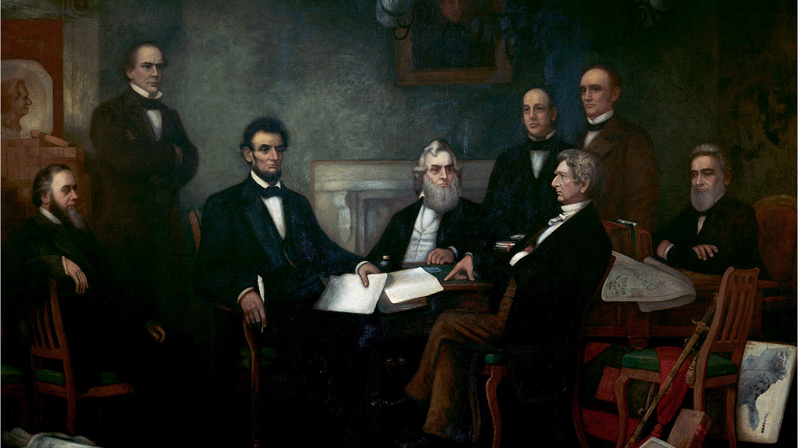

The president has a variety of jobs, with some clearly defined in the Constitution and others more implied.

Being chief executive is the top job of the president. This individual carries out the government’s laws and policies. The president is in charge of 15 cabinet departments and the approximately three million civilians who work for the federal government. They appoint the heads of these departments among the dozens of other agencies in the federal government. These appointments are usually made with Senate approval barring unusual circumstances.
The president is given specific powers to perform his or her chief executive duties.
Select each item to learn more.
The president can fire any of their appointed people at any time. Once elected, many presidents will fire everyone and bring their own people into those positions. Contrary to popular myth, the president can fire anyone at any time without needing a reason. There’s an exception to this hiring and firing power, however. Agencies known as independent executive agencies are set up so that a president isn’t completely free to fire and hire people without some accountability.
One of the president’s most important tools for carrying out the laws is the power to issue executive orders. An executive order is a rule or command for the executive branch that has the force of law. In many ways, it’s considered administrative law. Since only Congress has the authority to make laws, executive orders may stand only as long as they don’t violate existing law or aren’t considered unconstitutional by the courts. Issuing executive orders is generally considered as falling under the president’s constitutional duty to “take care that the laws are faithfully executed.” One famous example of an executive order is when President Truman racially integrated the military through executive order. The order held because it wasn’t unconstitutional and didn’t violate a law passed by Congress.
Presidents have the power to appoint federal judges to their positions with Senate approval. This comes with quite a bit of power, not necessarily for the president making the appointments, but for their ideas long after they're out of office. Federal judges hold office for lifetime terms. As long as their health holds out, it’s possible for a judge to make decisions and interpret the law (and the Constitution) decades after the appointing president is gone. Since presidents tend to appoint judges who share their worldview, this can influence government for years to come.
The Constitution gives the president the power to grant pardons. A pardon is a declaration of forgiveness and freedom from punishment. The president may also issue a reprieve on a death sentence or grant amnesty to someone. This power can be controversial, as presidents have helped out political allies in the past.
The president receives assistance from the cabinet and the Executive Office of the President (EOP). The word cabinet isn’t mentioned specifically in the Constitution, but the document suggests that the president may require the opinion of the principal officer in each of the executive departments. The vice president is the constitutional officer assigned to preside over the Senate and assume the presidency in the event of the death, resignation, removal, or disability of the president. The cabinet is generally made up of the vice president and the heads of major departments and agencies, and is ultimately determined by the president.